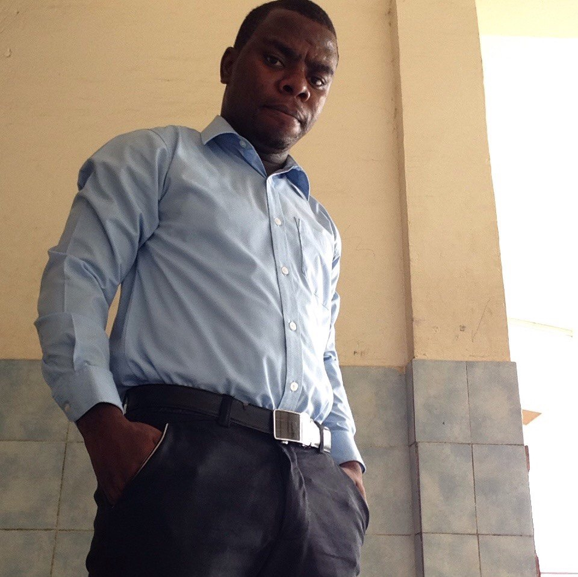

About Us
One of the reasons why people succeed in life is because of interpersonal skills. University student are not different, they also must learn how to manage
it as well as their team building skills. That is why we do most of our assignments in groups and this is not an exception.

My name is Salomon Ebi, I'm 24 years old, I'm from Equatorial Guinea. I did both elementary school and high school.
Currently I am a computer science student at UCSI University. I do not have much free time because my career does not allow me.
But when I have free time, I usually play football, and meet my friends. As a young and future computer user I would like to
give my bit to improve certain at the level of my country and the world.
My Name is Kenny Ricardo. I am from Indonesia. I have graduated
from my High School in Indonesia Last year. Currently i am studying at UCSI University and this is my first year second semester.
I am taking Mobile Computing and Networking Program. My Hobby is to watch movies and play games. I have 2 younger brothers currently
studying at high school and primary schools. I hope learning at UCSI with a lot of International students can give me valuable experience throughout my study

Miguel Site Obama, I am a lover of sports and technology.
I am currently doing a bachelor degree in Computer science. One of the things I like the most in my program is writting codes I enjoy programming
to the extend that I would like to do Masters Degree in Programming. I am from Equatorial Guinea and I am cursing my bachelors degree in Malaysia.
I love learning languages, I hope my studies give me a chance to learn Bahasa Malaysia, and I would not miss the opportuity to learn it. I can actually
speak three languages and in a inferior level two other languages.